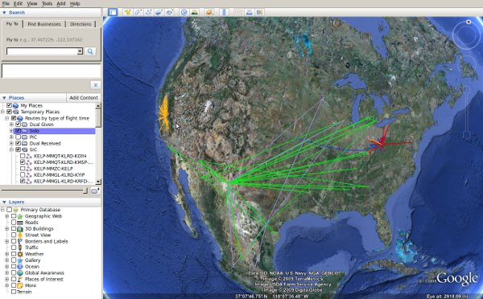
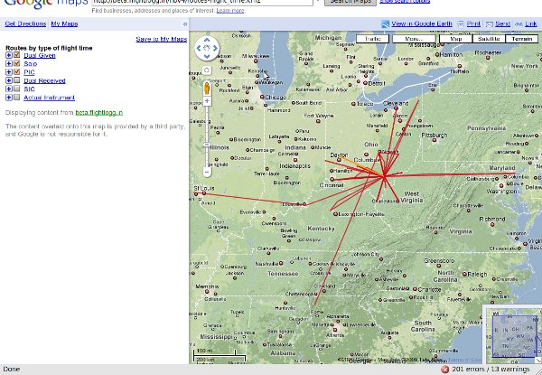
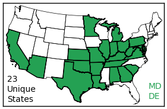
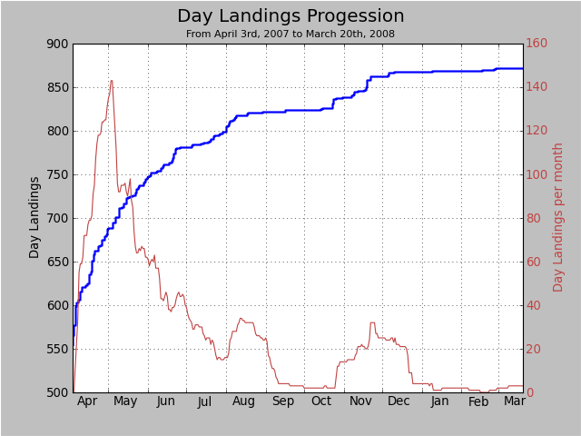

May 23, 2010 - Old FlightLogg.in' is going away
The site will be closed down effective the begining of June. Before the site goes offline, complete backups will be made of all user accounts, so no data will be permanently lost. If this message finds you late, go to the forums and make a request and someone will send you a copy of your data via email.
Please take note that it's just the old version of FlightLogg.in that is going away. The current version will still continue to exist, located
here.
April 2, 2010 - This site is deprecated!
This website has been deprecated! The new site, located at
http://flightlogg.in, has been created to replace this one. The new site is better in
every way. There is no reason to be using this site instead of the new one.
To convert your old FlightLogg.in account to the new site, follow these steps:
- Go to the import/export section of old.flightlogg.in and copy the link to share
your logbook with others. The link will look something like this:
"http://flightlogg.in/logbook.php?share=5&token=d0osd4gs5u".
- Go to New Flightlogg.in', and click the link
to register a new account
- New FlightLogg.in uses OpenID, so there is no username/email/password used to
sign in. You create a FlightLogg.in' account thats tied to another account on
a larger site, such as Yahoo or Google. Follow the direction on the sign up
page to create a new account.
- Once your New FlightLogg.in account is created, so to the import section of the new site. At the
top of the page there should be a box labeled "Old Flightlogg.in' Share URL".
In that box, enter the share url you copied in step 1. Click on either
'Preview' or 'Import'. If an error occurs, you can either report the error
to the forums, or try it again in a few days since typically bugs get fixed
quickly.
- Enjoy using the new site, because it's better in every way.
Even though the old site (the one you're reading/using right now) has been deprecated,
it will remain operational for at least the next few months. All though, at some point in
time, this site
will go away, so it's best to migrate to the new site earlier
than later.
October 8, 2009 - You are invited to the Flightloggin' 2.0 Beta
Instead of blabbing about all the new features of the FlightLoggin' beta, how about you
just check it out for yourself? The URL is
http://beta.flightlogg.in. Within the next few weeks or so, the site as you all know it
will become http://old.flightlogg.in, and the beta will become http://flightlogg.in.
The old site will not go away, but the URL will be replaced.
September 20, 2009 - Flightloggin' 2.0 preview series #3
The next highlighted feature of flightlogg.in 2.0 is the new Google Map/Google Earth feature. In the old FlightLogg.in site, all you can do is
view all airpoprts you've visited, and view all routes, colored by category/class. In 2.0, you can view routes, as well as all airports you're
flown to, colorizedby many different variables. You can also view them in Google Earth, as well as Google Maps:


In this example, the routes are colored by type of flight time. The green lines are flights where SIC was logged, the orange was flights where
Dual Given was logged, etc.
September 14, 2009 - Flightloggin' 2.0 preview series #2
For the next installment of the Flightloggin 2.0 preview series, I present to you the maps image feature. You can now display a small image
that highlights all the states you've flown to. Here is an example:

As you can see, it tells you how many unique states you've visited, as well as a textual representation of the smaller states which are a little
too small to be noticed when colored in.
September 11, 2009 - Flightloggin' 2.0 preview series #1
Over the next few days, I'm going to be showing off some spiffy new features that the new version of the site will have. First up is the new
line graphing engine. Currently you can view line graph progression by year, month+year, or by your entire career.
In Flightloggin 2.0, you will be able to view you time progression across any arbitrary length of time. Here is an example graph:

Also, you might notice that there are two lines. The blue line represents the progression, and the red line represents the rate of progression.
In this example, this pilot peaked at about a rate of 145 landings per month at the begining of May, when he had about 690 landings total. The red
line is a calculation of total landings during the past 30 days.
Another nice addition is the ability to output graphs in SVG format. For an example of an SVG graph, click
here. If your browser supports SVG, you can view this image just as you would any other graph,
with the advantage of being able to zoom way in you get greater detail. (For firefox users, try holding ctrl and moving around your
mouse wheel.
July 25, 2009 - Introducing fanmarkers.com
For the past few months I've been working on a new website called
Fan Markers, which is a sort of user-editable
aviation industry database. It's still kind of rough around the edges, but I hope someday it'll wedge out of the market all those job posting paysites
like climbto350. I urge all members to head on over there and create a new profile for the company they work for. The more companies and positions
that are in the database, the more useful the site is for everyone. One hang up is that you must have an OpenId account to sign up at Fan Markers.
If you have a google account or a yahoo account (which most people here do, as about 80% of users on this site signed up with either a gmail or yahoo account),
all you have to do is
click the corresponding icon, click "confirm", and you're done. The next version of flightlogg.in will use OpenID as well, so uh, get used to it,
I guess.... For more info about OpenID, check out
http://openid.net
May 21, 2009 - Happy Birthday
Flightlogg.in' just trned one year old a few days ago. Yay. In the one year it's been around, it has logged over 50,000 flights for a total of over
80,000 flight hours.
In a few months, the site will be undergoing a bunch of changes. If you read the fourm much, you'll know that a new version of the site is in the works. The following
features will exist in the new site:
- A mobile version of the site aimed at iPhone and Blackberry users that allows you to log flights and view your logbook from the very small screen of a portable device.
- Localization options so foreign pilots can have currency and medical reminders calculated appropriately as they should in their country.
- Custom columns, such as a column for Complex time, Turbine time and a bunch of others.
- Improved performance and user interface
- Improved import functions
- More graphing options to visualize your flight times
- Better mapping features. The map will no longer bog down or crash when you have a ton of routes.
- Export your logbook as a PDF file for better printing results.
- An integrated forum so you don't have to sign up for two different accounts
- An improved authentication system so changing passwords and things like that are easier and more bug-free
- Better themes
- A bunch of other stuff
The reason I'm not slowly adding these features into the site like I had been is because the new site will be using the
Django
framework, which means everything has to be redone from the ground up. If you have any suggestions or requests, make them in the forum. I had to turn off posting for
unregistered users because of all the spam, so you'll have to make an account if you didn't already.
Also, one more thing. The site will be changing hosts sometime in the next week. If the site goes down for a few hours, or even a few days, don't be alarmed. It'll be back eventually.
December 2, 2008 - Custom Logbook views
You can now create a customized view of your logbook. For instance you can view all flights between September 18th, 2004 and January 7th, 2005. Or
the last 15 flights occurring in the month of May 2002.
December 1, 2008 - Registering now fixed!
Registering new accounts was accidentally disabled for the past few days, but it's fixed now. Have a nice day!
October 4, 2008 - Now you can share your logbook with others!
Go to the import/export section. There is now a link that you can use to link others to your logbook. They can view all your flights, as well as look at
your maps and graphs.
Also a bunch of other miscellaneous changes have been made. If the map looks funky, press Ctrl + F5 to reload the javascript files
which will probably fix the problem.
One more thing, the code that handles the signature files have been changed. The way they used to work caused the links to break if you change your
password on the site. The way they work now, that won't happen. If you have one of those images linked somewhere, you must change the link. Sorry
for the inconvenience.
September 14, 2008 - New print feature
You can now create a printer friendly version of your logbook. Go to the import/export page, select which columns you want to be displayed, and it will generate
in a new window your pilot logbook in a manner which will look best when printed.
It seems that Internet Explorer is a little better at printing than Firefox or Opera at this time. So for best results, try to get your hands on a windows computer if you
plan of printing out your logbook. If you have a lot of columns, its also recommended to change the printing options to "landscape" instead of "portrait" so the text
doesn't get squished.
A number of bugs in the new entry popup were fixed as well, including one that prevented any simulator flights from being logged.
September 7, 2008 - New automatic backup feature
If you afraid that you'll lose all your logbook data if the site were to up and disappear, then worry no more! If you so choose, the site will
now email you a backup file up to once a week. Go to preferences, and at the bottom select how often you want the file to be sent to you. If you want,
you can specify another email address for the file to be sent to. I suggest you set up a new Gmail account to receive the backups, so you're not bothered
with getting the email every single week.
The mailings will be sent out on the 1st, 7th, 14th, and the 21st of each month.
August 27, 2008 - Signature files and improved Maps
A few signature image feature has been added. Go to the stats section to generate code for creating a dynamic image to display in your signature
on webforums, or display in your blog. Currently there are three colors schemes to choose from.
Also some improvements have been made to the Google Maps feature. Not only does it work a little faster now, but it is now working in Internet Explorer.
The default map mode has been changed to "Terrain", which I think looks a lot cleaner than the other modes.
August 16, 2008 - 8710 Totals
You can now easily view your pilot logbook totals as they would look on an FAA 8710 form. Just click on "8710 data" in the stats section. Also, making backup files now also includes
"Records" data, as well as info about all the planes in your logbook.
August 11, 2008 - New Career Totals
The "Career Totals" section of the stats page has been updated. Now you can easily calculate your pilot logbook totals for a certain category/class and tag combo for a
specified amount of time. For instance you can figure out how many simulated instrument hours you have in a complex multi-engine seaplane in the last 26 months.
And this time, for real I have added 2 new color schemes. Select them in the preferences page.
August 7, 2008 - OnlineLogbook.Net is now FlightLogg.in
This site now has a new name! The old one was very generic and unmemorable, so it's been ditched! OnlineLogbook.Net was only a tentative name anyways.
The old domain still works, but all links and bookmarks should be changed to the new URL.
Also, the site has a new default color scheme, as well as a new alternate color scheme in case blue isn't your color. To change color scheme, change the dropdown
box in the preferences page.
August 5, 2008 - Updated medical expiration dates and new airport plot
The FAA changed the duration of medical certificates. The site has been updated to reflect these new changes which are as follows: Under 40 years old, 1st class and 2nd class
medical certificates are now good for 12 calendar months, and the 3rd class medical certificate is good for 60 calendar months. If you're over 40 years old, 1st class is still good for 6 months, 2nd is good for
12 months, and the third class medical is now good for 36 calendar months. If you notice any problems with this change, please feel free to report them in the forum.
Also, a few weeks ago, a new Airport Map plot has been added. Instead of plotting all the routes you've flown, it will plot just the airports you've been to. For fun, if you'd
like to see a map of every airport visited by all OnlineLogbook.Net users (all 15 of them), click
here.
June 16, 2008 - New Accumulation Line Plots
A few Line plot feature has been added today. Now you can look at graphs to see how your times have grown over time. You can either look at your whole entire flying career,
or only a specific month.
June 7, 2008 - Bugs fixed in Mass Entry page
There were a few bugs recently discovered in the mass entry feature that have just been fixed. In the mass entry (and mass edit) page, all the fields are labeled. When the
user wants a particular field to be blank, the greyed out label should be left the way it is, and the site should enter no data into the database for that field. A bug was
causing those empty fields to be filled in with the title of the field, so many people are now left with a bunch of remarks fields as "Remarks", instructor fields as
"Instructor", etc. If you are one of these people and would like to convert those fields to blank, just click on "Mass Edit" in the corner of the logbook view, and just click
on "Save" at the bottom. This will also change numeric fields (such as Dual Received, Actual Instrument, XC) that are "0.0" to be changed to just blank.
May 28, 2008 - New Google Maps route plotting feature
Click
here to try it out. The first time you try to create a map, it may take a while, because it has to crawl google to find
the coordinates. After that, the coordinates are stored in the database, so it'll generate quickly for the next time. For now it only is able to plot ICAO and US IATA airports,
no navaids. Google and Airnav are both not very good at providing navaid coordinates, so until I can find a reliable source for those, you'll all have to do without for the
time being.
If it can't find an identifier in your logbook, fell free to make a post on the forums, along with the identifier and the coordinates, and I'll add it to the database.
May 3, 2008 - Site officially open to the public.
Some planned additions:
- More stats options, including line graphs.
- A way to backup plane data, as well as the "Records" page when exporting.
- More color schemes